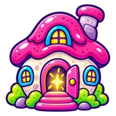
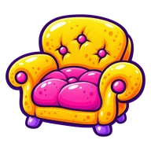
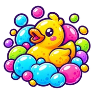

0
Opening your room
Sandbox
Exit
×
Where to?

Go home
Treat Street
Style Row
Maker’s Lane
Home

Cozy Nest
Hammer & Hue
Toy Box
Jelly Arcade
Snack Shack
Glow Up Studio
Jelly Threads

Bubble Salon
Map
Where to?
Arrange
×
Places
×
Capsule Corner
×
Yay!
Tile
Area
Floor
Turn
Paint
Store
Following
Mochi
×
Re-center
Menu
Pet
!
Explore
Menu
0
Fluffing the pillows